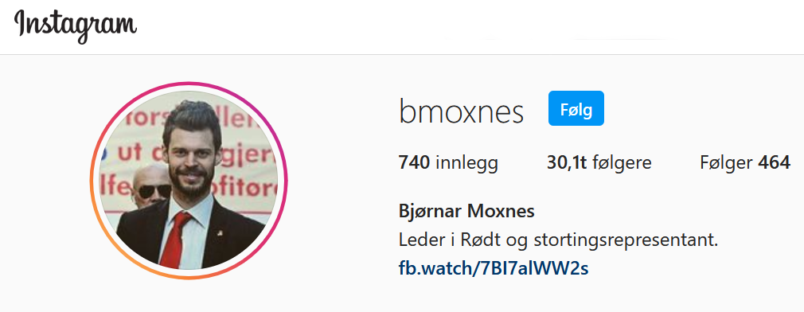

Leder: Bjørnar Moxnes
Lokal kandidat: Kristian Mateo Norheim


Har 1 offisiell konto på instagram, men også private kontoer fra medlemmer og ledelsen i Rødt.
Har ikke snapchat
Har ikke tiktok

Har egen facebook-side, hvor de ligger ut om deres egen politikk. De poster ca 1-2 posts til dagen, om deres egen politikk.

Dette er plassen de har mest informasjon om politikken deres. De når ut til veldig mange her.

Legger ut daglig posts. Tweeter om egen politikk og hva de står mest for.
- Målgruppen til rødt er hovedsakelig dem som kan stemme. De bruker ikke TikTok eller Snapchat, som gjør at det er veldig vanskelig å dele informasjon med yngre folk. De er mest aktive på Facebook, og nettsiden er stedet med mest informasjon.
- Rødt bruker Instagram, Facebook, Twitter og har sin egen nettside for å dele informasjon med følgerene sine
- På deres sosiale medier når de ut til voksne og ungdommer. Målgruppen bare voksne folk fordi de bruker alle disse midlene for å få stemmer.
- Sosiale medier er hovedsakelig brukt for egen reklame. De promoterer egen politikk, og prøver å overbevise andre om det samme.
- De har ingen plattformer hvor de snakker direkte med velgerne, istedenfor poster de heller til et stort publikum.
- Rødt bruker svært lite memes i mediene sine.
- Det er stor troverdighet i det de sier, her går det stort sett bare på om man er enige. Veldig stor del av deres informasjon er sant, og hvis ikke, blir det som oftest rettet opp i. De deler i stor grad om eget program på sosiale medier.
- Det er ikke så mye informasjon om kandidatene til partiet på sosiale mediene, men kandidatene promoterer i stor grad eget parti.